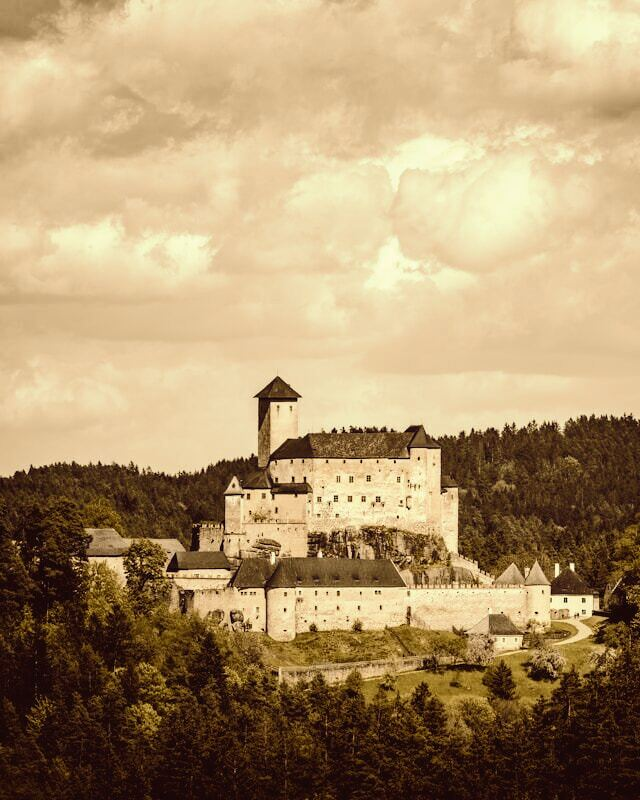
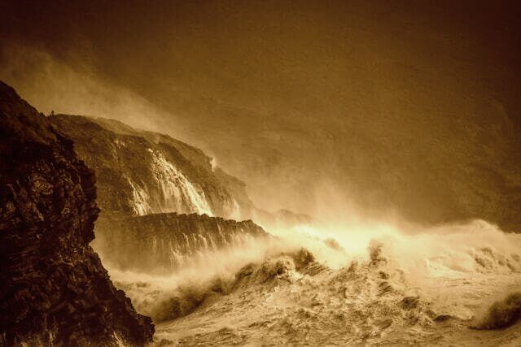
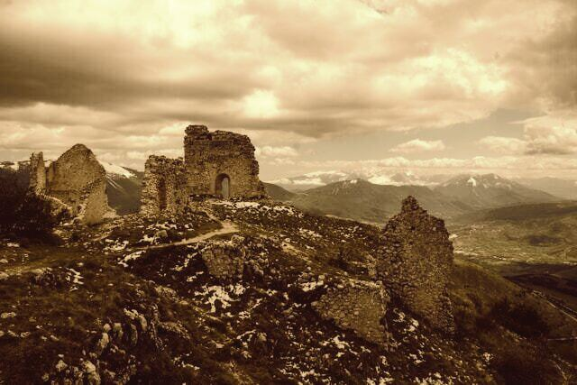

Knightstone
A great monarchy sitting strong in the east of the world. Ruled by the Ellingson family and the current Queen Yuvenna Ellingson. Nobles govern different sections of the kingdom, but they all answer to the queen.
The namesake city of Knightstone is built at the foot of the great Cardion mountains and is known for its great material wealth and military might. The deep woods that surround Knightstone are filled with ancient magic and old ruins of civilisations past.
The Drowned Lands
Once thought to be a great empire with vast amounts of wealth, something happened. Often theorised to be some great heresy against an ancient being such as a dragon or the Frozen King, the entire section of land became flooded. But it is not the sea rising to engulf it. The water is coming from the centre of the land and pouring off the edges in a country spanning waterfall. The waters are filled with many a beast and sailors avoid this area like the plague.
Ruins of Arlen
Once a colony of Knightstone, it has since been overrun with wild magic and large monsters. Often seen as the biggest failure of Knightstone. Thousands were killed and it now sits as a graveyard, empty and haunted by the remnants of those that died.
